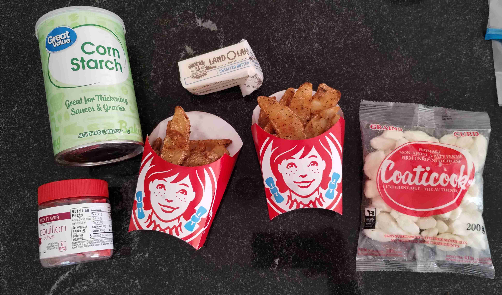
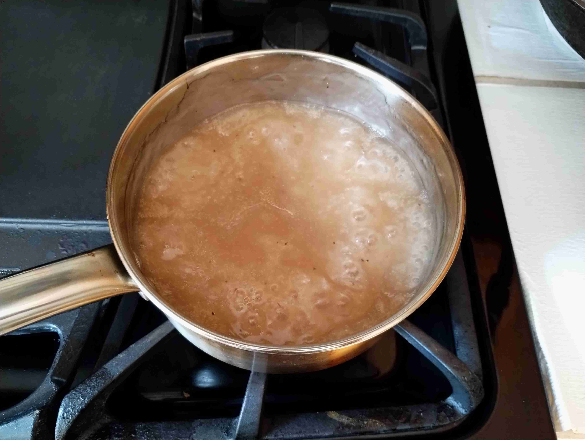
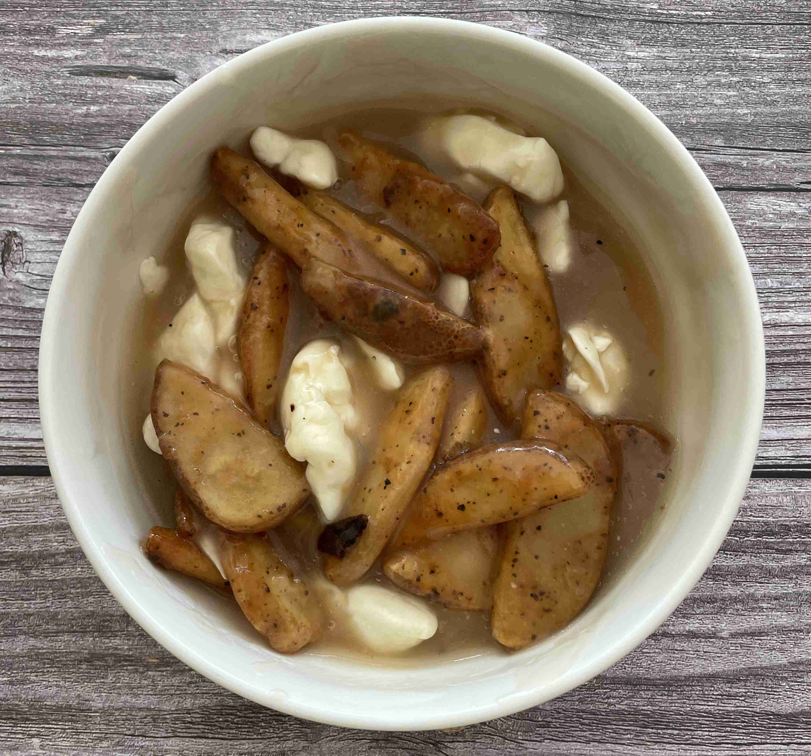
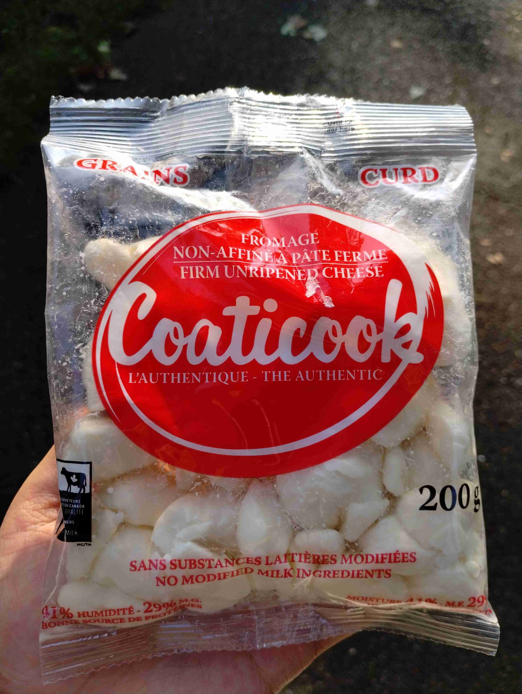

Poutine (Canada)
-
 4 servings
4 servings
-
 1
hour
1
hour
-
 Ms. Julie
Ms. Julie
-
 Meat
Meat
-
 Salty
Salty
-
 Umami
Umami
Cooked on July 26, 2023.
My eleventh recipe! Canadian Poutine is made with fries topped with a delicious gravy and squeeeeeeeaky cheese curds (straight from Canada!). It is a hearty dish that is perfect for a cold winter day, yet I cooked it in a heatwave in July. Poutine is a dish that is very popular in Canada, and is a must-try for anyone visiting the country.
Rating 8/10, it was just as I liked it to be. The gravy was delicious (although it could have been better if I actually used real beef stock), and the cheese curds were squeaky and fresh. The fries were nice and salty, and the gravy was hot but not as flavorful as I hoped for. I would definitely make this again, and would probably deep fry my own fries for the next time or try Five Guys fries.
Cooking
4 tbspbutter3 tbspcorn starch1/2 cupwater for corn starch3beef bouillon cubes2 cupswater for bouillon cubes2 cupscheese curds (I used a Canadian brand)2large Wendys breakfast fries

Heat 2 cups water to boiling and mix in the bouillon cubes. Set aside.
In another pot, melt the butter. Mix corn starch into cold water in a separate cup, and slowly pour into the pot. Add the beef stock from the other pot and stir until it thickens.
Let simmer for 8-10 minutes while stirring every minute or so. Salt and pepper to taste.

Drizle the gravy onto the fries and top with cheese curds. Mix in and enjoy while hot!

More Content
Check out these cheese curds straight from Canada, courtesy to Ms. Julie!! Thanks Ms. Julie!!!

Update: I made this again with Five Guys fries (ordered extra crispy) and it was amazing! The fries were so crispy and salty, and the gravy was so flavorful. Ms. Julie brought an even larger bag of cheese curds and it would so delicious. She showed me how to make a roux in an Instant Pot and showed me how she made her gravy. I thought it was a bit too black peppery but is definitely a grown taste. I would also recommend using real beef stock instead of bouillon cubes, as it would make the gravy more flavorful. A quick an easy recipe for on the go!